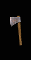
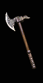
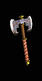
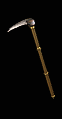
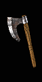
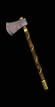
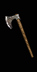
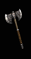
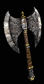
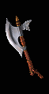

| 1 Handed Axe | Min/Max 1h Damage | Min Strength | Min Dexterity | Rangeadder | Durability | Sockets | Speed by Class | Quality Level |
|---|---|---|---|---|---|---|---|---|
|

Hand Axe |
3 to 6 (4.5 Avg) | - | - | 0 | 28 | 2 | [0] Ama, Asn, B, D, N, P - Fast S - Normal |
3 |
|

Axe |
4 to 11 (7.5 Avg) | 32 | - | 1 | 24 | 4 | [10] Asn, P - Fast Ama, B, D,N, S, - Normal |
7 |
|

Double Axe |
5 to 13 (9 Avg) | 43 | - | 1 | 24 | 5 | [10] Asn, P - Fast Ama, B, D, N, S, - Normal |
13 |
|

Military Pick |
7 to 11 (9 Avg) | 49 | 33 | 1 | 26 | 6 | [-10] Asn, P - Very Fast Ama, B, D, N, S, - Fast |
19 |
|

War Axe |
10 to 18 (14 Avg) | 67 | - | 2 | 26 | 6 | [0] Ama, Asn, B, D, N, P - Fast S - Normal |
25 |
| 2 Handed Axe | Min/Max 2h Damage | Min Strength | Min Dexterity | Rangeadder | Durability | Sockets | Speed by Class | Quality Level |
|

Large Axe |
6 to 13 (9.5 Avg) | 35 | - | 1 | 30 | 4 | [-10] D - Very Fast N, P, S - Fast Ama, Asn, B, - Normal |
6 |
|

Broad Axe |
10 to 18 (14 Avg) | 48 | - | 1 | 35 | 5 | [0] D, P, S - Fast Ama, Asn, B, N - Normal |
12 |
|

Battle Axe |
12 to 32 (22 Avg) | 54 | - | 1 | 40 | 5 | [10] D - Fast N, S - Normal Ama, Asn, B, P - Slow |
17 |
|

Great Axe |
9 to 30 (19.5 Avg) | 63 | 39 | 2 | 50 | 6 | [-10] D - Very Fast N, P, S - Fast B, Ama, Asn - Normal |
23 |
|

Giant Axe |
22 to 45 (33.5 Avg) | 70 | - | 3 | 50 | 6 | [10] D - Fast N, S - Normal Ama, Asn, B, P - Slow |
27 |